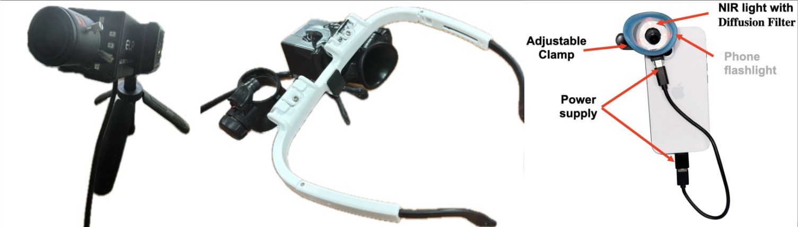
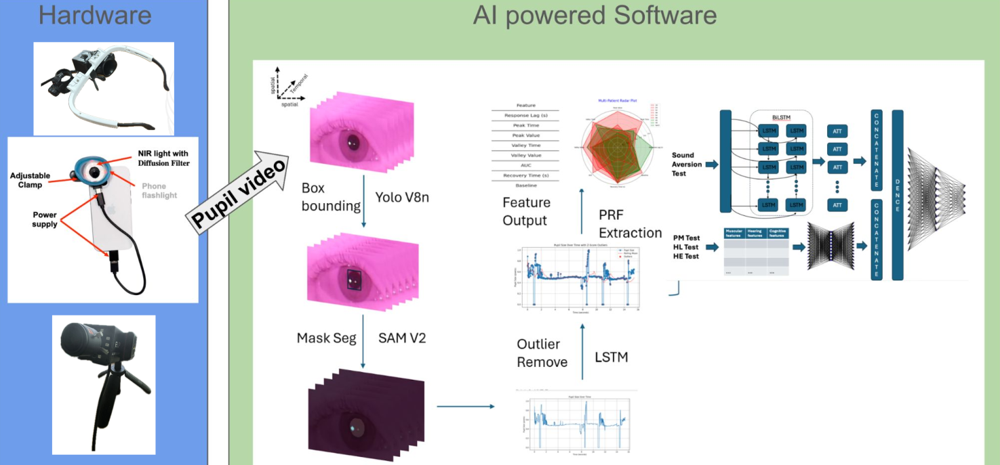
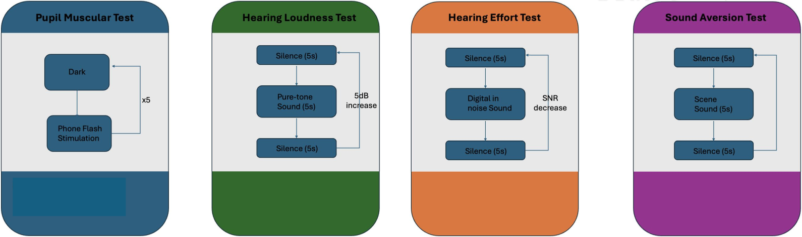
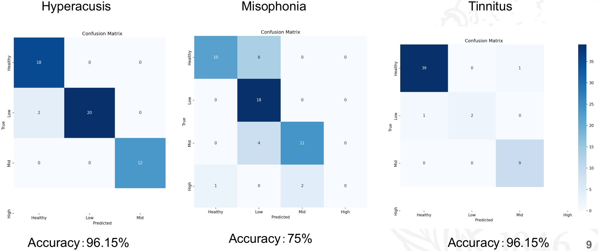

Date: February 3, 2025
Presenter: Chuhui Liu (Leo)
Affiliation: PhD Student, Computer Science, University at Buffalo
Session Overview
The first AI for HearTech Workshop of 2025 featured a presentation by PhD candidate Chuhui Liu (Leo) on AudioSight, a smart pupillometry system for objective hearing assessment. This session marked the beginning of our interdisciplinary seminar series exploring artificial intelligence applications in audiology and hearing sciences.
AudioSight: Smart Pupillometry System for Hearing Assessment
Smart Pupillometry for Audiology Assessment
Leo presented AudioSight, a novel approach using pupillometry to objectively assess hearing disorders. Traditional audiological assessments typically require active participation from patients, whereas pupillometry measures involuntary physiological responses to auditory stimuli.

AudioSight Device Prototypes: Desk Stand, Wearable, and Mobile Attachment
Key aspects of the technology include:
- Pupil dilation correlates with cognitive effort during auditory processing
- The involuntary nature of pupil responses provides objective measurements
- The system can potentially assess hearing function without requiring behavioral responses
- Multiple hardware implementations (desk-mounted, wearable, and smartphone-attached versions) offer flexibility for different research and clinical contexts
Technical Implementation
The AudioSight system integrates hardware with AI-driven software components:

AI-powered System Architecture for AudioSight
- Object detection algorithms for pupil region identification
- SAM V2 (Segment Anything Model) for precise pupil segmentation
- LSTM (Long Short-Term Memory) networks for blink artifact rejection
- Feature extraction from pupillary response functions
- Classification models for identifying specific hearing disorders
The team has developed specialized protocols to account for individual variability, including pupil muscular tests, hearing loudness tests with incremental increases, hearing effort tests with progressive noise addition, and sound aversion tests.

Test Protocols Addressing Individual Variability
Preliminary Findings
Preliminary clinical trials included participants with hyperacusis, misophonia, tinnitus, and healthy controls. The system demonstrated promising accuracy in differentiating these conditions, though challenges remain in cases where participants present with multiple disorders.

Classification Accuracy Results for Hearing Disorders
The confusion matrices show particularly strong performance for hyperacusis (96.15%) and tinnitus (96.15%) detection, with room for improvement in misophonia classification (75%).
Research Discussion
The presentation generated substantive discussion around several key themes:
- Methodological approaches to separating and quantifying multiple co-occurring hearing conditions
- Potential integration with established clinical measures like loudness discomfort level tests and tinnitus pitch matching
- The dual potential of AI in audiology: automating established processes and enabling innovation in assessment procedures
- Limitations of traditional labeled data approaches and the potential for reinforcement learning and foundation models
Next Steps
- Elizabeth or another student from her lab to present on an audiology-related topic at the next meeting on February 17th
- Leo to consider incorporating additional hearing tests (e.g., loudness discomfort levels, pitch matching) into the pupillometry study for comparison
- Research team to brainstorm new testing procedures that go beyond traditional audiometry methods
- Research team to investigate the potential application of reinforcement learning in the hearing tech research
- Research team to explore ways to use AGI for developing new clinical procedures in hearing tests
Future Directions
The discussion highlighted several promising research directions:
- Incorporating additional clinical tests for comprehensive assessment
- Developing regression models for quantifying symptom severity
- Transitioning from pure tone stimuli to more complex phonetic signals
- Exploring AGI (Artificial General Intelligence) approaches that reduce dependence on labeled data
Our next session is scheduled for February 17th, where we will continue exploring the intersection of AI and audiology with another research presentation.